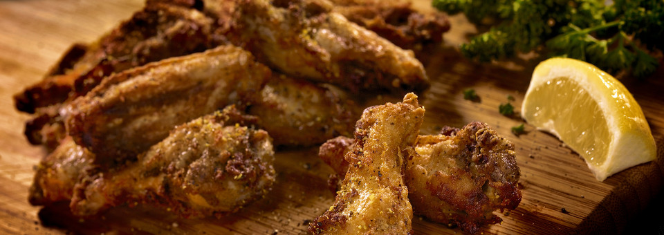
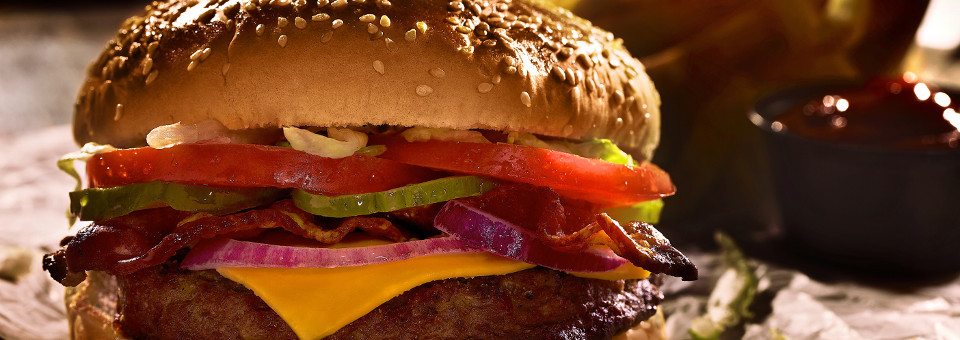

WE ARE PROUD TO BE PART OF THE BRIDGE CITY.
VISIT US FOR OUR CONVENIENT LOCATION, FRIENDLY ATMOSPHERE, AND GREAT FOOD.
In 2001, Saskpolytech Pizza Store first opened its doors to Saskatoon with a vision - to build a business on a foundation of excellent cuisine, friendly service and affordable prices.

More than 15 years later... the vision has become a Saskpolytech Pizza Store tradition. As one of Saskatoon's oldest independent school-owned restaurants, Saskpolytech Pizza Store prides itself on treating students like family. From the warm atmosphere to the courteous service, our restaurant has become a "home away from home" for many regular customers.
Perhaps the essential ingredient in Saskpolytech Pizza Store's success has been the pizza itself. Our homemade dough is handcrafted from a secret recipe handed down from generation to generation. Our tangy tomato sauce is made from only the freshest vegetables and spices. Add in top-quality meats and rich, tasty cheeses, and you have the perfect pizza.
Saskpolytech Pizza Store,built on history and tradition, maintained by quality and passion.